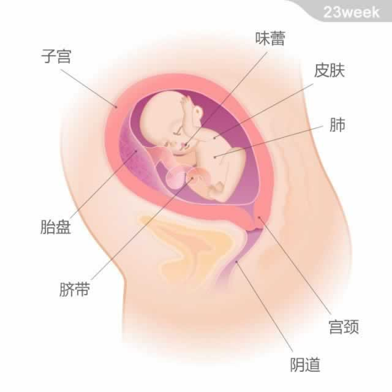

 宝宝的重量约为540克，从头部到臀部的长度约为22厘米。 本周宝宝的体重又增加了大约110克，身体各部分的比例慢慢均匀起来，但看上去还不那么丰满。他浑身覆盖着细细的胎毛。宝宝的味蕾开始发挥作用了，也许你不敢相信，他从这一刻起就已经爱上甜食了。 宝宝体内的白细胞开始生成，以对抗各类的感染。他会继续将羊水吸入正在发育的肺部，以锻炼其呼吸能力。肺部的血管和肺泡已经开始发育，并将最终交换的氧气运送到全身。因此，即使是早产宝宝，也很可能在重症监护下存活下来。